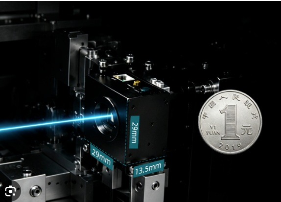

本資料では、国内の最新レーザー加工技術と、その品質を支える光学計測技術(ビームアナライザー)の関係について簡潔にまとめます。
東京大学とAGCが、ガラスの微細穴あけを従来比100万倍高速化する技術を発表。レーザーの時間波形・空間波形を制御することで、20µsで直径3µm、深さ1mmの穴を形成し、半導体パッケージ用ガラス基板などへの応用が期待されています。
京都大学とスタンレー電気が、青色GaN系フォトニック結晶レーザーでワット級出力と高ビーム品質を実現。銅などの高反射金属やCFRPの加工に適した光源として、EV部品の溶接・接合や軽量化への応用が期待されています。
古河電工が、橋梁・船舶・鉄道車両などの錆や劣化塗膜を除去する小型可搬型レーザーシステムを製品化。ブラスト工法に伴う粉じんや廃棄物の削減を目指し、現場作業の効率化が期待されています。
数十万円から100万円台で導入できる小型レーザーマーカーやレーザー溶接機が登場しています。試作、補修、刻印、少量生産などの内製化を通じて、中小製造業の短納期対応を支援する装置として注目されています。
SLMでレーザー光を複数の集光点に分岐し、微細形状を多点同時に加工できる技術です。フェムト秒レーザーと組み合わせた透明材料の三次元加工や、医療・光学部品などへの生産性向上への応用が期待されています。
【2026年9月発表】

Tucsen社製レーザービームプロファイラー「XTシリーズ」は、UV (240nm)からLWIR (14µm)まで幅広く対応します。ビーム幅測定精度±2%未満の高精度な定量分析と、最小29mm角の超小型筐体により、各種産業機器や現場への組み込みを容易にします。